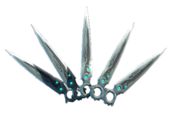

All items have ranks in Warframe, ranging from Unranked to Rank 30. Items the Tenno have will be ranked up, if possible, by having the item equipped and simply using it. The Rank of an item determines the amount of Mods it can hold, as along with Mod slots, there is a capacity feature that prevents overloaded Warframes and weapons, amongst other things.
Jump to the Mods section...The Tenno are masters of gun and blade, the weapons of the old, as they were trained to fight the Sentients, who could only harness new technology. From silent weapons like the Paris bow to loud guns like the Lato handgun, the Tenno were adept at using all of them to their advantages. During the tutorial, the player will have a choice of primary, secondary/sidearm and melee weapons.
The first weapon the Tenno must choose is their melee weapon.
| Melee Weapon | Description |
|---|---|
| Skana | The Skana is a standard issue sword. It is thin, sleek and quick. What it lacks in flat damage it makes up for in speed. It is still reliable, can pull off quick kills in the early game, and is my personal recommendation. |
| MK1-Bo | The MK1-Bo, which is a weaker version of the Bo, is a long range, high damage melee weapon. It trades speed for pure damage. It is recommended to have some sort of speed-boosting Ability or Mod to assist this weapon. |
The Tenno's next weapon is their sidearm, also known as their secondary weapon.
| Secondary Weapon | Description |
|---|---|
| Lato | The Lato is a handgun, both loud and quick. Its low damage is partially compensated for by its high fire rate and high accuracy. Be weary, however, as this loud gun attracts attention and can even ruin a spy, assassination or capture mission, due to an overall lack of damage output. This weapon is generaly preferred. |
| MK1-Kunai | The MK1-Kunai, which is a weaker version of the Kunai, is a silent set of throwing knives. This weapon does not do a lot of damage, but is quite accurate and completely silent. If the player plans to choose the MK1-Braton as a primary, this is a crucial item to pick up. Otherwise, lots of people prefer the Lato. |
The final weapon the Tenno must choose is their primary weapon.
| Primary Weapon | Description |
|---|---|
| MK1-Paris | The MK1-Paris, which is a weaker version of the Paris, is a bow made for assassinations. This weapon is quick and deadly, but is not ideal for fighting large groups, such as the Grineer marines. It generally deals higher damage, and is my personal recommendation. |
| MK1-Braton | The MK1-Braton, which is a weaker version of the Braton, is a fully automatic rifle, and is a standard issue weapon. It does, however, lack the damage and silence which the Paris has. It does, however, have a higher attack speed, meaning it is better against large groups. |
As players progress through the game, they will uncover different types of weapons. It is recommended that players try out many different types of weapons to see what they enjoy using, before choosing a final arsenal.
Another important part of Warframe comes in the form of Mods. These items allow the player to modify the abilities of a weapon, Warframe, companion or other item, many of which are not important at the very beginning of the game and will be learned as the player progresses. These Mods can affect the performance of Warframe Abilities, the Energy resource which is used to cast them, or other weapon-related stats amongst other things.
Mods come in four rarities, and eleven different types. However, one kind of mod classifies as its own rarity and its own type, hence why there are eleven types instead of ten.
| Rarity | Example | Description |
|---|---|---|
| Common | The most common type of Mod. Easily recognized by the bronze/brown color around the image. | |
| Uncommon | Less common type of Mod. Not to be confused with a Legendary Mod, the frame around the image is silver. | |
| Rare | Quite rare type of Mod. Easily recognized by golden color around the image. | |
| Legendary/Primed | The highest rarity of Mod, color similar to an Uncommon Mod, but the silver bar at the bottom runs across the entire bottom of the Mod, whereas the Uncommon frame simply disappears in that area. |
| Rarity | Example | Description |
|---|---|---|
| Ordinary | A Mod that does not fall into any of the other catagories is considered Ordinary. This means they only have one buff applying to only the equipped Warframe, can be placed in any Mod slot except an Exilus/Aura/Stance slot, are not Primed, do not augment Warframe Abilities, cannot be used in Conclave, and are not Damaged. | |
| Aura | In Warframe, Tenno can work alone, or in groups of up to four members. Aura Mods are Mods that benifit the entire group, or Cell, instead of just one Tenno. | |
| Stance | Exclusive to melee weapons, Stance Mods give the weapon more Mod slots and a unique fighting style, as well as a set of combos. | |
| Exilus | Always a utility or mobility Mod. Can only be placed in an Exilus slot, which is unlocked with an Exilus adapter. As a new player, you need not worry about this. | |
| Nightmare Mode | A Powerful Mod, only dropped by completing missions in Nightmare Mode. Cannot be obtained otherwise. These Mods have two stat buffs instead of just one. | |
| Corrupted | A Mod with one often powerful buff, but with a debuff to balance it out. Be careful when using these Mods, as the buff may not be worth the debuff, depending on which Warframe the player is using. | |
| Augment | A Mod that augments a Warframe's Ability. Only changes one Ability. | |
| Conclave | A Mod that can only be used in the Conclave, or PvP, gamemode. | |
| Damaged | Weaker versions of other Mods. Cannot be repaired. | |
| Riven | |
Extremely powerful Mod, carrying up to four different stats, with a minimum of two. All stats, as well as stat values, are random, making Riven Mods the only Mods to do this. Any of the stats can be a buff or a debuff. |
| Legendary/Primed | The opposite of Damaged Mods, these are stronger versions of other Mods. |
When a Warframe enters combat, it must be equipped with the proper Mods. Some of these Mods impact the Abilities, or Powers, of a Warframe, as well as the Energy consumed to use these Abilities. Though not all Warframes will need all four of the following Mods, they will all use one or more of them.
| Stat | Example | Description |
|---|---|---|
| Power Duration |  |
Power Duration Mods affect how long an Ability lasts for. It has no effect on toggle Abilities, which are Abilities that drain energy as long as they are toggled ‘on’ and do nothing when toggled ‘off.’ |
| Power Efficiency | Power Efficiency Mods affect how much Energy is consumed by each cast of an Ability. All Abilities that consume Energy are affected by this. It does not affect things such as the Passive Ability of a Warframe. | |
| Power Range | Power Range Mods affect the range of the Ability used. In other words, it changes the size of the area affected by the Ability. | |
| Power Strength | Power Duration Mods affect the potency, or strength, of an Ability. This includes increasing the power of damage buff Abilities, and increasing the damage of damaging Abilities. |
Using Mods and weapons correctly is key to using the full potential of any Warframe.